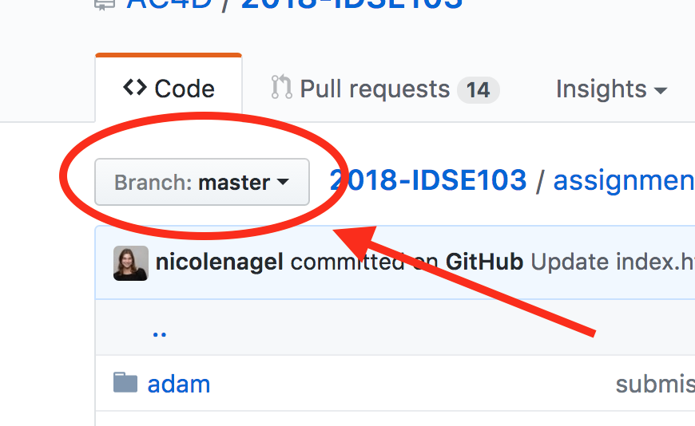

1. Navigate to AC4D / 2018 IDSE103 / Assignments / 2 / YOUR NAME
2. Click "Upload Files" and drag over your blueprint images, raw prototype photos, and retouched prototype photos.
3. Choose to create a new branch (call it assignment-2-your-name) and start a pull request. Write a descriptive commit message (assignment 2 images).
4. Create the pull request.
5. Navigate to the Assignments / 2 / YOUR NAME / index.html file
6. Use the Branch Dropdown and switch to the branch you just created.

7. Click "Edit this file" icon.
8. You'll need to add the necessary code to the page to render your images. They should look something like this:
<h3>Blueprints</h3>
<img src="blueprint-front.svg" style="width:100%" /><br />
<img src="blueprint-side.svg" style="width:100%" /><br />
<img src="blueprint-top.svg" style="width:100%" /><br />
<h3>Prototype</h3>
<img src="prototype-studio-before.jpg" style="width:100%" /><br />
<img src="prototype-studio-after.jpg" style="width:100%" /><br />
<img src="prototype-context-before.jpg" style="width:100%" /><br />
<img src="prototype-context-after.jpg" style="width:100%" /><br />
(You'll lose some points if your blueprints are not SVG files or your images are smaller than 3840 pixels wide)
Add your name in the HTML file.
9. Save your changes to index.html and make sure you're committing to the same branch you uploaded your files to! (assignment-2-your-name)
10. Use the "View deployment" button on your pull request and check your changes for rendering problems.
If something doesn't look right in the preview, you can add more commits to your branch. If you accidently make multiple branches or pull requests, you can close them and delete them.
Here's a video showing exactly what you need to do:
If you get stuck or have problems, email me: chap.ambrose@ac4d.com
I'm most responsive 9:00-5:00, Mon-Fri. It's easier for me to help if you've got a branch or pull request started.